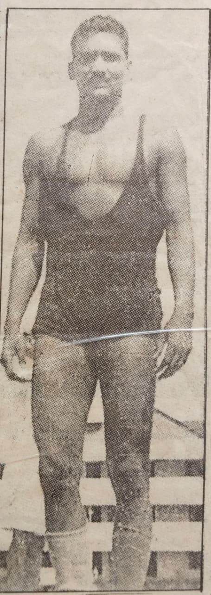

Gallery
Moments that defined a legend





Legendary Wrestler • Empire Stadium Gold Medalist • Asian Games Bronze Medalist • Police Inspector
A journey of dedication, strength, and honor
Laxmikant Pandey, known as "Chikkan Pehelwan," was a legendary wrestler whose achievements brought immense pride to India. His journey in wrestling was marked by extraordinary victories and international recognition that established him as one of India's greatest wrestlers.
During the 1962 Asian Games held in Bangkok, Jakarta, Pandey Ji's wrestling match with Pakistan's wrestler Waseer ended in a draw, and he had to settle for a bronze medal after losing to Japan on points. The people of Bangkok held Pandey Ji in high regard, and his victory over London's wrestler during that tour brought great honor to India.
In 1957, when the Sri Lankan wrestling team visited India, Pandey Ji faced them at the Barabati Stadium in Cuttack. It was a remarkable contest — he easily defeated the wrestler of his own weight category and then fought the heavyweight champion, pinning him to the ground within just two minutes with a powerful Multani move. The people of Cuttack celebrated his victory with immense enthusiasm, taking him on a grand procession through the city and honoring him with a hero's welcome.
India's lightweight champion and internationally renowned wrestler Uday Chand also faced Pandey Ji multiple times in wrestling competitions. Their bouts were often attended by important dignitaries and drew large crowds. In 1966, the famous wrestler Vishnu defeated Uday Chand on points in the National Wrestling Championship held in Amritsar. Later, during the selections for the 1960 Rome Olympics held in Bombay and Shimla, Vishnu and Uday Chand wrestled to a draw.
In truth, both of these Indian wrestlers (Uday Chand and Pandey Ji) earned great respect and recognition in the wrestling world for many years. They achieved remarkable success in the field and became famous for their exceptional wrestling artistry — true legends of their time.
After the conclusion of the National Games, the "Duke of Edinburgh" invited Pandey Ji to participate in wrestling matches held at the Empire Stadium in Britain. There, he faced Pakistan's wrestler Waseer. Using his special wrestling move, Pandey Ji lifted and threw Waseer to the ground, pinning him decisively and winning the bout. He was awarded the gold medal in that competition and thus avenged India's earlier loss in the National Games.
Honoring a lifetime of dedication to wrestling
1960s
London, Britain
International Wrestling
Invited by the Duke of Edinburgh, Pandey Ji defeated Pakistan's wrestler Waseer using his special wrestling move, avenging India's earlier loss and bringing great honor to the nation.
1962
Bangkok, Jakarta
International Wrestling
His match with Pakistan's wrestler Waseer ended in a draw, but he settled for bronze after losing to Japan on points. The people of Bangkok held him in high regard.
1957
Barabati Stadium, Cuttack
International Match
Defeated his weight category opponent easily, then fought the heavyweight champion, pinning him within two minutes with a powerful Multani move.
Moments that defined a legend
Historical coverage of a wrestling legend


Dedication to duty and family legacy
The DIG of the Uttar Pradesh Police, Mr. Spear Sahab, recruited Pandey Ji into the PAC (Provincial Armed Constabulary) and granted him full freedom to pursue wrestling. Pandey Ji also participated in Police Zone and All India Police Games, where he continuously won gold medals for several years. Along with this, he brought great honor to the Uttar Pradesh Police in national and international wrestling competitions.
He helped recruit and train several emerging wrestlers like Dinanath Ray, Amarjeet Singh, Shobhanath, Tarkeshwar Pandey, Ramjeet Yadav, and Mahirajram into the police department. The Uttar Pradesh Police later honored him with the T.F.N. Singh Award for his contributions to Olympic wrestling. In 1978, he retired from the post of Police Inspector (Mirzapur).
Of fair complexion and a very cheerful personality, Pandey Ji was married in 1946 and became the father of three sons and two daughters. All his sons were deeply interested in wrestling, and his eldest son, Pramanath Pandey, became an excellent wrestler himself. After completing his M.A. from Gorakhpur University, he was promoted to the post of Inspector in the Uttar Pradesh Police.
In 1968, while posted as the Station Officer at the Teetari police station in the hilly district of Banda, he was killed in February that same year during an anti-dacoit operation.
A journey through time
Defeated Sri Lankan wrestlers at Barabati Stadium, Cuttack. Easily defeated his weight category opponent and then fought the heavyweight champion, pinning him within two minutes with a powerful Multani move. Received hero's welcome procession through the city.
Invited by the Duke of Edinburgh to participate in wrestling matches at Empire Stadium, Britain. Defeated Pakistan's wrestler Waseer using his special wrestling move, avenging India's earlier loss and winning the gold medal.
Participated in Asian Games held in Bangkok, Jakarta. His match with Pakistan's wrestler Waseer ended in a draw, but settled for bronze medal after losing to Japan on points. The people of Bangkok held him in high regard.
Famous wrestler Vishnu defeated Uday Chand on points in the National Wrestling Championship held in Amritsar. Later, during selections for 1960 Rome Olympics held in Bombay and Shimla, Vishnu and Uday Chand wrestled to a draw.
Retired from the post of Police Inspector (Mirzapur) after serving with distinction. Received T.F.N. Singh Award for contributions to Olympic wrestling and helped recruit and train several emerging wrestlers into the police department.
His eldest son Pramanath Pandey, who became an excellent wrestler himself and was promoted to Inspector in Uttar Pradesh Police, was killed in February during an anti-dacoit operation while posted as Station Officer at Teetari police station in Banda.